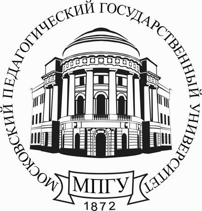

Moscow State Pedagogical University [Introduction]: Moscow State Pedagogical University is one of the best universities in Russia for international student education and among the earliest institutions in Russia to admit foreign students. Since its founding, it has cultivated countless outstanding talents in Russia and around the world. Introduction to the university: Moscow State Pedagogical University (Moscow State Lenin Pedagogical University) was founded in 18...
Moscow State Pedagogical University
[Introduction]: Moscow State Pedagogical University is one of the best universities in Russian international student education, and one of the earliest universities in Russia to enroll foreign students. Since its founding, it has cultivated countless outstanding talents in Russia and around the world.

Moscow State Pedagogical University (Moscow State Lenin Pedagogical University) was founded on November 1, 1872, and was renamed in 1990. Formerly known as: Moscow State Lenin Pedagogical University. Moscow Pedagogical University is one of the earliest universities in Russia to enroll foreign students and was the first to establish an education department for foreigners and stateless persons (within Russia or CIS countries). It ranks first among teacher training institutions in Russia and CIS countries. Moscow Pedagogical University also offers night school and correspondence courses for working professionals, making it the largest educational base in Russia, with over 3,000 students enrolled annually in these programs.
In 2004, Moscow Pedagogical University was rated as one of the best universities in Russia for international student education. By the end of 2008, the number of foreign students graduating at Moscow Pedagogical University exceeded 30,000, with more than 800 international students enrolled, including 130 Chinese students.
Majors and Duration
1. Degree programs and study period for international students
Preparatory Program (1 year or 1.5 years), Bachelor's degree (4 years), Master's (2 years), Doctoral (3 years) (Hours: 26 hours/week)
2. Major Offerings
International Student Preparatory Department, Sports Department (5 years), Painting Arts Department (5 years), Painting, Drawing, Decorative Arts, Craft and Commerce Department (5 years), Music Department: Musical Instruments, Conducting, Vocal Music, Music Theory, Foreign Languages Department, Literature Department, Socio-Economic Law Department, Literature Journalism Department, Mathematics Department, Educational Psychology Department, Chemistry Department (5 years), Early Childhood Educational Psychology, Biochemistry Department (5 years), Disability Education Department (5 years), Physics Department, Early Childhood Education Department (5 years), Geography Department (5 years), Primary School Teacher Training Department (5 years), History Department (5 years), Slavic and Western European Language Literature, Culture Studies Department.
莫斯科国立师范大学
【导读】：莫斯科国立师范大学俄罗斯留学生教育最优秀的高校之一，是俄罗斯最早招收外国留学生的高校之一，建校至今未俄罗斯乃至全世界培养了无数优秀人才。
院校介绍
莫斯科国立师范大学(莫斯科国立列宁师范大学)该校创立于1872年11月1日，1990年更名。前称：莫斯科国立列宁师范大学。莫斯科师范大学是俄罗斯最早招收外国留学生的高校之一，并且是第一个创建外国人和(俄罗斯或独联体国家境内的)无国籍人员教育系的高校，俄罗斯和独联体国家师范类学校排名第一。莫斯科师范大学还为在职人员提供夜校和函授的课程，是俄罗斯夜校和函授最大的教育基地，每年在该校读夜校和函授的人数超过3000人。
2004年莫斯科师范大学被评为俄罗斯留学生教育最优秀的高校之一，截止到2008年底，在莫斯科师范大学毕业的外国留学生数量超过3万人，在校外国留学生数量达到800多人，其中中国留学生130人。
专业及学制
1.学位设置及学制留学生学制
预备系(1年或1年半)、本科(4年)、硕士(2年)、 博士(3年) (学时：26小时/星期)
2.专业设置
留学生预备系、体育运动系(5年) 、绘画艺术系(5年)、绘画,图画,装饰艺术、 工艺与商业系(5年) 、音乐系: 乐器，指挥，声乐，音乐理论 、 外语系 、文学系、社会经济法律系、文学系新闻专业、数学系 、教育心理学系、化学系(5年)、学前教育心理学、 生物化学系(5年)、残疾教育系(5年)、物理系、幼儿教育系(5年)、 地理系(5年)、小学师资系(5年)、历史系(5年)、斯拉夫及西欧语文学、文化学系。
English edition. Select 中文原文 to compare with the original Chinese article.
This article is edited and published by Liaoning Overseas Study Service Co., Ltd. The content is for study abroad planning reference only. Unauthorized reproduction is prohibited.
Information on policies, regulations, admissions brochures, and program fees is timely. Please refer to the latest releases from official institutions and institutions in various countries; For detailed verification, please Contact an advisor。